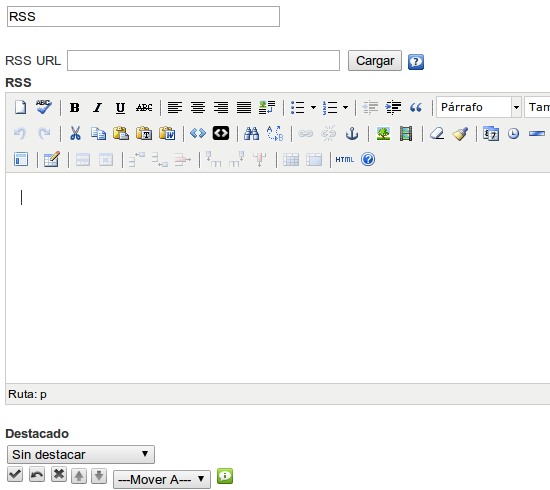

RSS
RSS es un sencillo formato de datos que es utilizado para difundir contenidos a suscriptores de un sitio web. Sin embargo, este iDevice no respeta la filosofía de la sindicación, puesto que realiza una copia de la fuente de titulares y queda congelado el día en el que se crea el bloque. Tal y como sucede con el iDevice "Artículo de la Wikipedia", esta característica tiene tres consecuencias:
- El contenido del recurso no se actualiza cuando se actualiza la web a la que está sindicado.
- Podremos modificar el contenido del artículo en nuestro material para mostrarlo modificado a nuestros alumnos.
- Permite la utilización del recurso sin conexión a Internet.
Al seleccionar el iDevice "RSS" del listado de iDevices se nos mostrará lo siguiente en nuestro eXeLearning:

En el campo de texto RSS URL, pega la dirección del RSS. Recuerda hacer clic en el botón Cargar.
Sobre el contenido cargado puedes hacer modificaciones. Observa las diferencias entre Sin destacar y Destacado moderado.
Ejemplo de iDevice RSS: Noticias de RIATE
Retransmisión Moodle Moot'09 Madrid
COLABORA CON RIATE. ENVÍA TU PROPUESTA CON EL NOMBRE DEL BOLETÍN.
Luis F Iglesias, el camino de un maestro
Argentina en el Mercosur Educativo
I CONGRESO INTERNACIONAL MENORES EN LAS TIC
CONGRESO SOFTWARE, EDUCACIÓN Y CONOCIMIENTO LIBRE
Disponible en RIATE la Guía Práctica sobre Software Libre de UNESCO
Actividad
Realiza los siguientes procedimientos:
- Abre el archivo miarchivo2.elp que has creado en la actividad anterior (Puedes hacer doble clic sobre él).
- Crea un iDevice "Artículo RSS" en el nodo "Información". Modifica el título.
- Busca tres fuentes de contenidos rss y agrégalas en el iDevice.
- Junto al enlace a cada rss, incluye una pequeña descripción del contenido.
- Una vez terminado, haz clic en el botón
 para ver el resultado.
para ver el resultado. - Guarda los cambios. (Archivo > Guardar)
Si tienes alguna duda puedes consultar el siguiente vídeo:
eXeLearning. iDevice RSS. (CC by)
Obra publicada con Licencia Creative Commons Reconocimiento Compartir igual 4.0